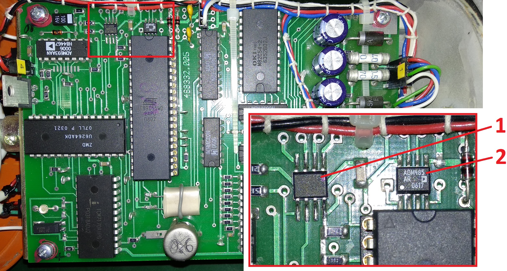

Содержание/
БДМГ-АТ2343. Ремонт
/ БДМГ-АТ2343. Если не подключается
БДМГ-АТ2343. Если не подключается

Проверить микросхему памяти D12 [1] — AT24C64N (может подойдет M24C64-WMN6TP ?)
Проверить микросхему обмена D13 [2] — ADM485AR